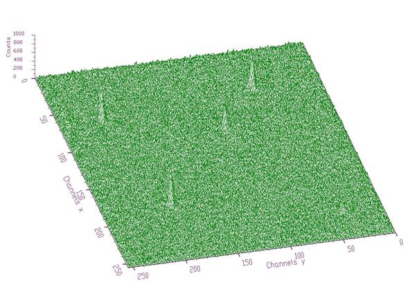
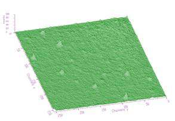
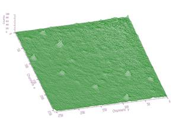
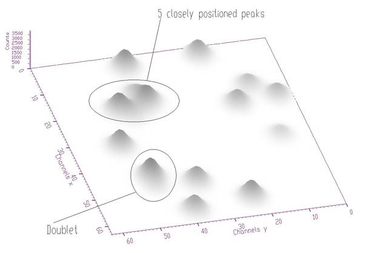
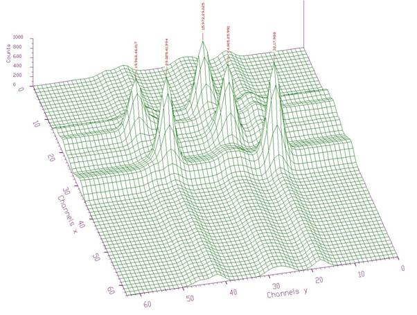
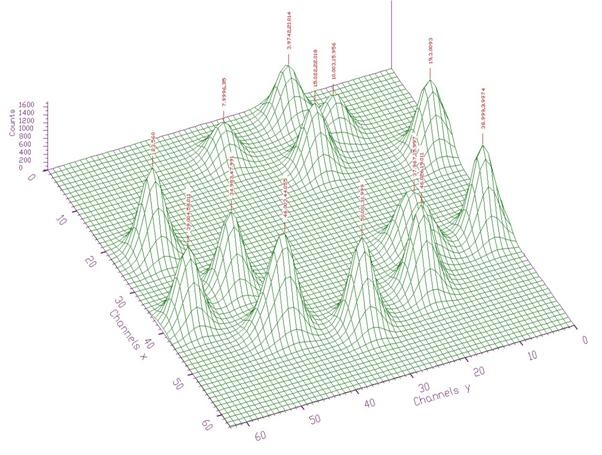

class TSpectrum2: public TNamed
THIS CLASS CONTAINS ADVANCED SPECTRA PROCESSING FUNCTIONS. ONE-DIMENSIONAL BACKGROUND ESTIMATION FUNCTIONS TWO-DIMENSIONAL BACKGROUND ESTIMATION FUNCTIONS ONE-DIMENSIONAL SMOOTHING FUNCTIONS TWO-DIMENSIONAL SMOOTHING FUNCTIONS ONE-DIMENSIONAL DECONVOLUTION FUNCTIONS TWO-DIMENSIONAL DECONVOLUTION FUNCTIONS ONE-DIMENSIONAL PEAK SEARCH FUNCTIONS TWO-DIMENSIONAL PEAK SEARCH FUNCTIONS These functions were written by: Miroslav Morhac Institute of Physics Slovak Academy of Sciences Dubravska cesta 9, 842 28 BRATISLAVA SLOVAKIA email:fyzimiro@savba.sk, fax:+421 7 54772479 The original code in C has been repackaged as a C++ class by R.Brun The algorithms in this class have been published in the following references: [1] M.Morhac et al.: Background elimination methods for multidimensional coincidence gamma-ray spectra. Nuclear Instruments and Methods in Physics Research A 401 (1997) 113- 132. [2] M.Morhac et al.: Efficient one- and two-dimensional Gold deconvolution and its application to gamma-ray spectra decomposition. Nuclear Instruments and Methods in Physics Research A 401 (1997) 385-408. [3] M.Morhac et al.: Identification of peaks in multidimensional coincidence gamma-ray spectra. Nuclear Instruments and Methods in Research Physics A 443(2000), 108-125. These NIM papers are also available as Postscript files from: ftp://root.cern.ch/root/SpectrumDec.ps.gz ftp://root.cern.ch/root/SpectrumSrc.ps.gz ftp://root.cern.ch/root/SpectrumBck.ps.gz NEW FUNCTIONS January 2006
All figures in this page were prepared using DaqProVis system, Data Acquisition, Processing and Visualization system, which is being developed at the Institute of Physics, Slovak Academy of Sciences, Bratislava, Slovakia:
http://www.fu.sav.sk/nph/projects/DaqProVis/ under construction
Function Members (Methods)
| TSpectrum2() | |
| TSpectrum2(const TSpectrum2&) | |
| TSpectrum2(Int_t maxpositions, Float_t resolution = 1) | |
| virtual | ~TSpectrum2() |
| void | TObject::AbstractMethod(const char* method) const |
| virtual void | TObject::AppendPad(Option_t* option = "") |
| virtual TH1* | Background(const TH1* hist, int niter = 20, Option_t* option = "") |
| const char* | Background(float** spectrum, Int_t ssizex, Int_t ssizey, Int_t numberIterationsX, Int_t numberIterationsY, Int_t direction, Int_t filterType) |
| virtual void | TObject::Browse(TBrowser* b) |
| static TClass* | Class() |
| virtual const char* | TObject::ClassName() const |
| virtual void | TNamed::Clear(Option_t* option = "") |
| virtual TObject* | TNamed::Clone(const char* newname = "") const |
| virtual Int_t | TNamed::Compare(const TObject* obj) const |
| virtual void | TNamed::Copy(TObject& named) const |
| const char* | Deconvolution(float** source, float** resp, Int_t ssizex, Int_t ssizey, Int_t numberIterations, Int_t numberRepetitions, Double_t boost) |
| virtual void | TObject::Delete(Option_t* option = "")MENU |
| virtual Int_t | TObject::DistancetoPrimitive(Int_t px, Int_t py) |
| virtual void | TObject::Draw(Option_t* option = "") |
| virtual void | TObject::DrawClass() constMENU |
| virtual TObject* | TObject::DrawClone(Option_t* option = "") constMENU |
| virtual void | TObject::Dump() constMENU |
| virtual void | TObject::Error(const char* method, const char* msgfmt) const |
| virtual void | TObject::Execute(const char* method, const char* params, Int_t* error = 0) |
| virtual void | TObject::Execute(TMethod* method, TObjArray* params, Int_t* error = 0) |
| virtual void | TObject::ExecuteEvent(Int_t event, Int_t px, Int_t py) |
| virtual void | TObject::Fatal(const char* method, const char* msgfmt) const |
| virtual void | TNamed::FillBuffer(char*& buffer) |
| virtual TObject* | TObject::FindObject(const char* name) const |
| virtual TObject* | TObject::FindObject(const TObject* obj) const |
| virtual Option_t* | TObject::GetDrawOption() const |
| static Long_t | TObject::GetDtorOnly() |
| TH1* | GetHistogram() const |
| virtual const char* | TObject::GetIconName() const |
| virtual const char* | TNamed::GetName() const |
| Int_t | GetNPeaks() const |
| virtual char* | TObject::GetObjectInfo(Int_t px, Int_t py) const |
| static Bool_t | TObject::GetObjectStat() |
| virtual Option_t* | TObject::GetOption() const |
| Float_t* | GetPositionX() const |
| Float_t* | GetPositionY() const |
| virtual const char* | TNamed::GetTitle() const |
| virtual UInt_t | TObject::GetUniqueID() const |
| virtual Bool_t | TObject::HandleTimer(TTimer* timer) |
| virtual ULong_t | TNamed::Hash() const |
| virtual void | TObject::Info(const char* method, const char* msgfmt) const |
| virtual Bool_t | TObject::InheritsFrom(const char* classname) const |
| virtual Bool_t | TObject::InheritsFrom(const TClass* cl) const |
| virtual void | TObject::Inspect() constMENU |
| void | TObject::InvertBit(UInt_t f) |
| virtual TClass* | IsA() const |
| virtual Bool_t | TObject::IsEqual(const TObject* obj) const |
| virtual Bool_t | TObject::IsFolder() const |
| Bool_t | TObject::IsOnHeap() const |
| virtual Bool_t | TNamed::IsSortable() const |
| Bool_t | TObject::IsZombie() const |
| virtual void | TNamed::ls(Option_t* option = "") const |
| void | TObject::MayNotUse(const char* method) const |
| virtual Bool_t | TObject::Notify() |
| void | TObject::Obsolete(const char* method, const char* asOfVers, const char* removedFromVers) const |
| static void | TObject::operator delete(void* ptr) |
| static void | TObject::operator delete(void* ptr, void* vp) |
| static void | TObject::operator delete[](void* ptr) |
| static void | TObject::operator delete[](void* ptr, void* vp) |
| void* | TObject::operator new(size_t sz) |
| void* | TObject::operator new(size_t sz, void* vp) |
| void* | TObject::operator new[](size_t sz) |
| void* | TObject::operator new[](size_t sz, void* vp) |
| TSpectrum2& | operator=(const TSpectrum2&) |
| virtual void | TObject::Paint(Option_t* option = "") |
| virtual void | TObject::Pop() |
| virtual void | Print(Option_t* option = "") const |
| virtual Int_t | TObject::Read(const char* name) |
| virtual void | TObject::RecursiveRemove(TObject* obj) |
| void | TObject::ResetBit(UInt_t f) |
| virtual void | TObject::SaveAs(const char* filename = "", Option_t* option = "") constMENU |
| virtual void | TObject::SavePrimitive(ostream& out, Option_t* option = "") |
| virtual Int_t | Search(const TH1* hist, Double_t sigma = 2, Option_t* option = "", Double_t threshold = 0.05) |
| Int_t | SearchHighRes(float** source, float** dest, Int_t ssizex, Int_t ssizey, Double_t sigma, Double_t threshold, Bool_t backgroundRemove, Int_t deconIterations, Bool_t markov, Int_t averWindow) |
| static void | SetAverageWindow(Int_t w = 3) |
| void | TObject::SetBit(UInt_t f) |
| void | TObject::SetBit(UInt_t f, Bool_t set) |
| static void | SetDeconIterations(Int_t n = 3) |
| virtual void | TObject::SetDrawOption(Option_t* option = "")MENU |
| static void | TObject::SetDtorOnly(void* obj) |
| virtual void | TNamed::SetName(const char* name)MENU |
| virtual void | TNamed::SetNameTitle(const char* name, const char* title) |
| static void | TObject::SetObjectStat(Bool_t stat) |
| void | SetResolution(Float_t resolution = 1) |
| virtual void | TNamed::SetTitle(const char* title = "")MENU |
| virtual void | TObject::SetUniqueID(UInt_t uid) |
| virtual void | ShowMembers(TMemberInspector& insp) |
| virtual Int_t | TNamed::Sizeof() const |
| const char* | SmoothMarkov(float** source, Int_t ssizex, Int_t ssizey, Int_t averWindow) |
| static TH1* | StaticBackground(const TH1* hist, Int_t niter = 20, Option_t* option = "") |
| static Int_t | StaticSearch(const TH1* hist, Double_t sigma = 2, Option_t* option = "goff", Double_t threshold = 0.05) |
| virtual void | Streamer(TBuffer& b) |
| void | StreamerNVirtual(TBuffer& b) |
| virtual void | TObject::SysError(const char* method, const char* msgfmt) const |
| Bool_t | TObject::TestBit(UInt_t f) const |
| Int_t | TObject::TestBits(UInt_t f) const |
| virtual void | TObject::UseCurrentStyle() |
| virtual void | TObject::Warning(const char* method, const char* msgfmt) const |
| virtual Int_t | TObject::Write(const char* name = 0, Int_t option = 0, Int_t bufsize = 0) |
| virtual Int_t | TObject::Write(const char* name = 0, Int_t option = 0, Int_t bufsize = 0) const |
| virtual void | TObject::DoError(int level, const char* location, const char* fmt, va_list va) const |
| void | TObject::MakeZombie() |
Data Members
| enum { | kBackIncreasingWindow | |
| kBackDecreasingWindow | ||
| kBackSuccessiveFiltering | ||
| kBackOneStepFiltering | ||
| }; | ||
| enum TObject::EStatusBits { | kCanDelete | |
| kMustCleanup | ||
| kObjInCanvas | ||
| kIsReferenced | ||
| kHasUUID | ||
| kCannotPick | ||
| kNoContextMenu | ||
| kInvalidObject | ||
| }; | ||
| enum TObject::[unnamed] { | kIsOnHeap | |
| kNotDeleted | ||
| kZombie | ||
| kBitMask | ||
| kSingleKey | ||
| kOverwrite | ||
| kWriteDelete | ||
| }; |
| TH1* | fHistogram | resulting histogram |
| Int_t | fMaxPeaks | Maximum number of peaks to be found |
| Int_t | fNPeaks | number of peaks found |
| TString | TNamed::fName | object identifier |
| Float_t* | fPosition | [fNPeaks] array of current peak positions |
| Float_t* | fPositionX | [fNPeaks] X position of peaks |
| Float_t* | fPositionY | [fNPeaks] Y position of peaks |
| Float_t | fResolution | resolution of the neighboring peaks |
| TString | TNamed::fTitle | object title |
| static Int_t | fgAverageWindow | Average window of searched peaks |
| static Int_t | fgIterations | Maximum number of decon iterations (default=3) |
Class Charts
{kind=link}
{kind=link}
{kind=link}
{kind=link}
Function documentation
maxpositions: maximum number of peaks
resolution: determines resolution of the neighboring peaks
default value is 1 correspond to 3 sigma distance
between peaks. Higher values allow higher resolution
(smaller distance between peaks.
May be set later through SetResolution.
static function: Set average window of searched peaks see TSpectrum2::SearchHighRes
static function: Set max number of decon iterations in deconvolution operation see TSpectrum2::SearchHighRes
TWO-DIMENSIONAL BACKGROUND ESTIMATION FUNCTION
This function calculates the background spectrum in the input histogram h.
The background is returned as a histogram.
Function parameters:
-h: input 2-d histogram
-numberIterations, (default value = 20)
Increasing numberIterations make the result smoother and lower.
-option: may contain one of the following options
- to set the direction parameter
"BackIncreasingWindow". By default the direction is BackDecreasingWindow
- filterOrder-order of clipping filter, (default "BackOrder2"
-possible values= "BackOrder4"
"BackOrder6"
"BackOrder8"
- "nosmoothing"- if selected, the background is not smoothed
By default the background is smoothed.
- smoothWindow-width of smoothing window, (default is "BackSmoothing3")
-possible values= "BackSmoothing5"
"BackSmoothing7"
"BackSmoothing9"
"BackSmoothing11"
"BackSmoothing13"
"BackSmoothing15"
- "Compton" if selected the estimation of Compton edge
will be included.
- "same" : if this option is specified, the resulting background
histogram is superimposed on the picture in the current pad.
NOTE that the background is only evaluated in the current range of h.
ie, if h has a bin range (set via h->GetXaxis()->SetRange(binmin,binmax),
the returned histogram will be created with the same number of bins
as the input histogram h, but only bins from binmin to binmax will be filled
with the estimated background.
TWO-DIMENSIONAL PEAK SEARCH FUNCTION This function searches for peaks in source spectrum in hin The number of found peaks and their positions are written into the members fNpeaks and fPositionX. The search is performed in the current histogram range. Function parameters: hin: pointer to the histogram of source spectrum sigma: sigma of searched peaks, for details we refer to manual threshold: (default=0.05) peaks with amplitude less than threshold*highest_peak are discarded. 0<threshold<1 By default, the background is removed before deconvolution. Specify the option "nobackground" to not remove the background. // By default the "Markov" chain algorithm is used. Specify the option "noMarkov" to disable this algorithm Note that by default the source spectrum is replaced by a new spectrum// By default a polymarker object is created and added to the list of functions of the histogram. The histogram is drawn with the specified option and the polymarker object drawn on top of the histogram. The polymarker coordinates correspond to the npeaks peaks found in the histogram. A pointer to the polymarker object can be retrieved later via: TList *functions = hin->GetListOfFunctions(); TPolyMarker *pm = (TPolyMarker*)functions->FindObject("TPolyMarker") Specify the option "goff" to disable the storage and drawing of the polymarker.
resolution: determines resolution of the neighboring peaks
default value is 1 correspond to 3 sigma distance
between peaks. Higher values allow higher resolution
(smaller distance between peaks.
May be set later through SetResolution.
TWO-DIMENSIONAL BACKGROUND ESTIMATION FUNCTION - RECTANGULAR RIDGES This function calculates background spectrum from source spectrum. The result is placed to the array pointed by spectrum pointer. Function parameters: spectrum-pointer to the array of source spectrum ssizex-x length of spectrum ssizey-y length of spectrum numberIterationsX-maximal x width of clipping window numberIterationsY-maximal y width of clipping window for details we refer to manual direction- direction of change of clipping window - possible values=kBackIncreasingWindow kBackDecreasingWindow filterType-determines the algorithm of the filtering -possible values=kBackSuccessiveFiltering kBackOneStepFiltering
Background estimation
Goal: Separation of useful information (peaks) from useless information (background)
method is based on Sensitive Nonlinear Iterative Peak (SNIP) clipping algorithm [1]
there exist two algorithms for the estimation of new value in the channel
Algorithm based on Successive Comparisons
It is an extension of one-dimensional SNIP algorithm to another dimension. For details we refer to [2].
Algorithm based on One Step Filtering
New value in the estimated channel is calculated as
.
where p = 1, 2, , number_of_iterations.
Function:
const char* TSpectrum2::Background (float **spectrum, int ssizex, int ssizey, int numberIterationsX, int numberIterationsY, int direction, int filterType)
This function calculates background spectrum from the source spectrum. The result is placed in the matrix pointed by spectrum pointer. One can also switch the direction of the change of the clipping window and to select one of the two above given algorithms. On successful completion it returns 0. On error it returns pointer to the string describing error.
Parameters:
spectrum-pointer to the matrix of source spectrum
ssizex, ssizey-lengths of the spectrum matrix
numberIterationsX, numberIterationsYmaximal widths of clipping
window,
direction- direction of change of clipping window
- possible values=kBackIncreasingWindow
kBackDecreasingWindow
filterType-type of the clipping algorithm,
-possible values=kBack SuccessiveFiltering
kBackOneStepFiltering
References:
[1] C. G Ryan et al.: SNIP, a statistics-sensitive background treatment for the quantitative analysis of PIXE spectra in geoscience applications. NIM, B34 (1988), 396-402.
[2] M. Morháč, J. Kliman, V. Matouek, M. Veselský, I. Turzo.: Background elimination methods for multidimensional gamma-ray spectra. NIM, A401 (1997) 113-132.
Example 1 script Back_gamma64.c :

Fig. 1 Original two-dimensional gamma-gamma-ray spectrum

Fig. 2 Background estimated from data from Fig. 1 using decreasing clipping window with widths 4, 4 and algorithm based on successive comparisons. The estimate includes not only continuously changing background but also one-dimensional ridges.

Fig. 3 Resulting peaks after subtraction of the estimated background (Fig. 2) from original two-dimensional gamma-gamma-ray spectrum (Fig. 1).
Script:
// Example to illustrate the background estimator (class TSpectrum).
// To execute this example, do
// root > .x Back_gamma64.C
#include <TSpectrum>
void Back_gamma64() {
Int_t i, j;
Double_t nbinsx = 64;
Double_t nbinsy = 64;
Double_t xmin = 0;
Double_t xmax = (Double_t)nbinsx;
Double_t ymin = 0;
Double_t ymax = (Double_t)nbinsy;
Float_t ** source = new float *[nbinsx];
for (i=0;i<nbinsx;i++)
source[i]=new float[nbinsy];
TH2F *back = new TH2F("back","Background estimation",nbinsx,xmin,xmax,nbinsy,ymin,ymax);
TFile *f = new TFile("spectra2\\TSpectrum2.root");
back=(TH2F*) f->Get("back1;1");
TCanvas *Background = new TCanvas("Background","Estimation of background with increasing window",10,10,1000,700);
TSpectrum *s = new TSpectrum();
for (i = 0; i < nbinsx; i++){
for (j = 0; j < nbinsy; j++){
source[i][j] = back->GetBinContent(i + 1,j + 1);
}
}
s->Background(source,nbinsx,nbinsy,4,4,kBackDecreasingWindow,kBackSuccessiveFiltering);
for (i = 0; i < nbinsx; i++){
for (j = 0; j < nbinsy; j++)
back->SetBinContent(i + 1,j + 1, source[i][j]);
}
back->Draw("SURF");
}
Example 2 script Back_gamma256.c :
Fig. 4 Original two-dimensional gamma-gamma-ray spectrum 256x256 channels

Fig. 5 Peaks after subtraction of the estimated background (increasing clipping window with widths 8, 8 and algorithm based on successive comparisons) from original two-dimensional gamma-gamma-ray spectrum (Fig. 4).
Script:
// Example to illustrate the background estimator (class TSpectrum).
// To execute this example, do
// root > .x Back_gamma256.C
#include <TSpectrum>
void Back_gamma256() {
Int_t i, j;
Double_t nbinsx = 64;
Double_t nbinsy = 64;
Double_t xmin = 0;
Double_t xmax = (Double_t)nbinsx;
Double_t ymin = 0;
Double_t ymax = (Double_t)nbinsy;
Float_t ** source = new float *[nbinsx];
for (i=0;i<nbinsx;i++)
source[i]=new float[nbinsy];
TH2F *back = new TH2F("back","Background estimation",nbinsx,xmin,xmax,nbinsy,ymin,ymax);
TFile *f = new TFile("spectra2\\TSpectrum2.root");
back=(TH2F*) f->Get("back2;1");
TCanvas *Background = new TCanvas("Background","Estimation of background with increasing window",10,10,1000,700);
TSpectrum *s = new TSpectrum();
for (i = 0; i < nbinsx; i++){
for (j = 0; j < nbinsy; j++){
source[i][j] = back->GetBinContent(i + 1,j + 1);
}
}
s->Background(source,nbinsx,nbinsy,8,8,kBackIncreasingWindow,kBackSuccessiveFiltering);
for (i = 0; i < nbinsx; i++){
for (j = 0; j < nbinsy; j++)
back->SetBinContent(i + 1,j + 1, source[i][j]);
}
back->Draw("SURF");
}
Example 3 script Back_synt256.c :

Fig. 6 Original two-dimensional synthetic spectrum 256x256 channels

Fig. 7 Peaks after subtraction of the estimated background (increasing clipping window with widths 8, 8 and algorithm based on successive comparisons) from original two-dimensional gamma-gamma-ray spectrum (Fig. 6). One can observe artifacts (ridges) around the peaks due to the employed algorithm.

Fig. 8 Peaks after subtraction of the estimated background (increasing clipping window with widths 8, 8 and algorithm based on one step filtering) from original two-dimensional gamma-gamma-ray spectrum (Fig. 6). The artifacts from the above given Fig. 7 disappeared.
Script:
// Example to illustrate the background estimator (class TSpectrum).
// To execute this example, do
// root > .x Back_synt256.C
#include <TSpectrum>
void Back_synt256() {
Int_t i, j;
Double_t nbinsx = 64;
Double_t nbinsy = 64;
Double_t xmin = 0;
Double_t xmax = (Double_t)nbinsx;
Double_t ymin = 0;
Double_t ymax = (Double_t)nbinsy;
Float_t ** source = new float *[nbinsx];
for (i=0;i<nbinsx;i++)
source[i]=new float[nbinsy];
TH2F *back = new TH2F("back","Background estimation",nbinsx,xmin,xmax,nbinsy,ymin,ymax);
TFile *f = new TFile("spectra2\\TSpectrum2.root");
back=(TH2F*) f->Get("back3;1");
TCanvas *Background = new TCanvas("Background","Estimation of background with increasing window",10,10,1000,700);
TSpectrum *s = new TSpectrum();
for (i = 0; i < nbinsx; i++){
for (j = 0; j < nbinsy; j++){
source[i][j] = back->GetBinContent(i + 1,j + 1);
}
}
s->Background(source,nbinsx,nbinsy,8,8,kBackIncreasingWindow,kBackSuccessiveFiltering);//kBackOneStepFiltering
for (i = 0; i < nbinsx; i++){
for (j = 0; j < nbinsy; j++)
back->SetBinContent(i + 1,j + 1, source[i][j]);
}
back->Draw("SURF");
}
TWO-DIMENSIONAL MARKOV SPECTRUM SMOOTHING FUNCTION
This function calculates smoothed spectrum from source spectrum
based on Markov chain method.
The result is placed in the array pointed by source pointer.
Function parameters:
source-pointer to the array of source spectrum
ssizex-x length of source
ssizey-y length of source
averWindow-width of averaging smoothing window
Smoothing
Goal: Suppression of statistical fluctuations
the algorithm is based on discrete Markov chain, which has very simple invariant distribution
being defined from the normalization condition
n is the length of the smoothed spectrum and
is the probability of the change of the peak position from channel i to the channel i+1. is the normalization constant so that and m is a width of smoothing window. We have extended this algortihm to two dimensions.
Function:
const char* TSpectrum2::SmoothMarkov(float **fSpectrum, int ssizex, int ssizey, int averWindow)
This function calculates smoothed spectrum from the source spectrum based on Markov chain method. The result is placed in the vector pointed by source pointer. On successful completion it returns 0. On error it returns pointer to the string describing error.
Parameters:
fSpectrum-pointer to the matrix of source spectrum
ssizex, ssizey -lengths of the spectrum matrix
averWindow-width of averaging smoothing window
Reference:
[1] Z.K. Silagadze, A new algorithm for automatic photopeak searches. NIM A 376 (1996), 451.
Example 4 script Smooth.c :


Fig. 9 Original noisy spectrum. Fig. 10 Smoothed spectrum m=3
Peaks can hardly be observed. Peaks become apparent.

Fig. 11 Smoothed spectrum m=5 Fig.12 Smoothed spectrum m=7
Script:
// Example to illustrate the Markov smoothing (class TSpectrum).
// To execute this example, do
// root > .x Smooth.C
#include <TSpectrum>
void Smooth() {
Int_t i, j;
Double_t nbinsx = 256;
Double_t nbinsy = 256;
Double_t xmin = 0;
Double_t xmax = (Double_t)nbinsx;
Double_t ymin = 0;
Double_t ymax = (Double_t)nbinsy;
Float_t ** source = new float *[nbinsx];
for (i=0;i<nbinsx;i++)
source[i]=new float[nbinsy];
TH2F *smooth = new TH2F("smooth","Background estimation",nbinsx,xmin,xmax,nbinsy,ymin,ymax);
TFile *f = new TFile("spectra2\\TSpectrum2.root");
smooth=(TH2F*) f->Get("smooth1;1");
TCanvas *Smoothing = new TCanvas("Smoothing","Markov smoothing",10,10,1000,700);
TSpectrum *s = new TSpectrum();
for (i = 0; i < nbinsx; i++){
for (j = 0; j < nbinsy; j++){
source[i][j] = smooth->GetBinContent(i + 1,j + 1);
}
}
s->SmoothMarkov(source,nbinsx,nbinsx,3);//5,7
for (i = 0; i < nbinsx; i++){
for (j = 0; j < nbinsy; j++)
smooth->SetBinContent(i + 1,j + 1, source[i][j]);
}
smooth->Draw("SURF");
}
TWO-DIMENSIONAL DECONVOLUTION FUNCTION This function calculates deconvolution from source spectrum according to response spectrum The result is placed in the matrix pointed by source pointer. Function parameters: source-pointer to the matrix of source spectrum resp-pointer to the matrix of response spectrum ssizex-x length of source and response spectra ssizey-y length of source and response spectra numberIterations, for details we refer to manual numberRepetitions, for details we refer to manual boost, boosting factor, for details we refer to manual
Deconvolution
Goal: Improvement of the resolution in spectra, decomposition of multiplets
Mathematical formulation of the 2-dimensional convolution system is
where h(i,j) is the impulse response function, x, y are input and output matrices, respectively, are the lengths of x and h matrices
let us assume that we know the response and the output matrices (spectra) of the above given system.
the deconvolution represents solution of the overdetermined system of linear equations, i.e., the calculation of the matrix x.
from numerical stability point of view the operation of deconvolution is extremely critical (ill-posed problem) as well as time consuming operation.
the Gold deconvolution algorithm proves to work very well even for 2-dimensional systems. Generalization of the algorithm for 2-dimensional systems was presented in [1], [2].
for Gold deconvolution algorithm as well as for boosted deconvolution algorithm we refer also to TSpectrum
Function:
const char* TSpectrum2::Deconvolution(float **source, const float **resp, int ssizex, int ssizey, int numberIterations, int numberRepetitions, double boost)
This function calculates deconvolution from source spectrum according to response spectrum using Gold deconvolution algorithm. The result is placed in the matrix pointed by source pointer. On successful completion it returns 0. On error it returns pointer to the string describing error. If desired after every numberIterations one can apply boosting operation (exponential function with exponent given by boost coefficient) and repeat it numberRepetitions times.
Parameters:
source-pointer to the matrix of source spectrum
resp-pointer to the matrix of response spectrum
ssizex, ssizey-lengths of the spectrum matrix
numberIterations-number of iterations
numberRepetitions-number of repetitions for boosted deconvolution. It must be
greater or equal to one.
boost-boosting coefficient, applies only if numberRepetitions is greater than one.
Recommended range <1,2>.
References:
[1] M. Morháč, J. Kliman, V. Matouek, M. Veselský, I. Turzo.: Efficient one- and two-dimensional Gold deconvolution and its application to gamma-ray spectra decomposition. NIM, A401 (1997) 385-408.
[2] Morháč M., Matouek V., Kliman J., Efficient algorithm of multidimensional deconvolution and its application to nuclear data processing, Digital Signal Processing 13 (2003) 144.
Example 5 script Decon.c :
response function (usually peak) should be shifted to the beginning of the coordinate system (see Fig. 13)

Fig. 13 2-dimensional response spectrum

Fig. 14 2-dimensional gamma-gamma-ray input spectrum (before deconvolution)
Fig. 15 Spectrum from Fig. 14 after deconvolution (1000 iterations)
Script:
// Example to illustrate the Gold deconvolution (class TSpectrum2).
// To execute this example, do
// root > .x Decon.C
#include <TSpectrum2>
void Decon() {
Int_t i, j;
Double_t nbinsx = 256;
Double_t nbinsy = 256;
Double_t xmin = 0;
Double_t xmax = (Double_t)nbinsx;
Double_t ymin = 0;
Double_t ymax = (Double_t)nbinsy;
Float_t ** source = new float *[nbinsx];
for (i=0;i<nbinsx;i++)
source[i]=new float[nbinsy];
TH2F *decon = new TH2F("decon","Gold deconvolution",nbinsx,xmin,xmax,nbinsy,ymin,ymax);
TFile *f = new TFile("spectra2\\TSpectrum2.root");
decon=(TH2F*) f->Get("decon1;1");
Float_t ** response = new float *[nbinsx];
for (i=0;i<nbinsx;i++)
response[i]=new float[nbinsy];
TH2F *resp = new TH2F("resp","Response matrix",nbinsx,xmin,xmax,nbinsy,ymin,ymax);
resp=(TH2F*) f->Get("resp1;1");
TCanvas *Deconvol = new TCanvas("Deconvolution","Gold deconvolution",10,10,1000,700);
TSpectrum *s = new TSpectrum();
for (i = 0; i < nbinsx; i++){
for (j = 0; j < nbinsy; j++){
source[i][j] = decon->GetBinContent(i + 1,j + 1);
}
}
for (i = 0; i < nbinsx; i++){
for (j = 0; j < nbinsy; j++){
response[i][j] = resp->GetBinContent(i + 1,j + 1);
}
}
s->Deconvolution(source,response,nbinsx,nbinsy,1000,1,1);
for (i = 0; i < nbinsx; i++){
for (j = 0; j < nbinsy; j++)
decon->SetBinContent(i + 1,j + 1, source[i][j]);
}
decon->Draw("SURF");
}
Example 6 script Decon2.c :
Fig. 16 Response spectrum

Fig. 17 Original synthetic input spectrum (before deconvolution). It is composed of 17 peaks. 5 peaks are overlapping in the outlined multiplet and two peaks in doublet.
Fig. 18 Spectrum from Fig. 17 after deconvolution (1000 iterations). Resolution is improved but the peaks in multiplet remained unresolved.
Script:
// Example to illustrate the Gold deconvolution (class TSpectrum2).
// To execute this example, do
// root > .x Decon2.C
#include <TSpectrum2>
void Decon2() {
Int_t i, j;
Double_t nbinsx = 64;
Double_t nbinsy = 64;
Double_t xmin = 0;
Double_t xmax = (Double_t)nbinsx;
Double_t ymin = 0;
Double_t ymax = (Double_t)nbinsy;
Float_t ** source = new float *[nbinsx];
for (i=0;i<nbinsx;i++)
source[i]=new float[nbinsy];
TH2F *decon = new TH2F("decon","Gold deconvolution",nbinsx,xmin,xmax,nbinsy,ymin,ymax);
TFile *f = new TFile("spectra2\\TSpectrum2.root");
decon=(TH2F*) f->Get("decon2;1");
Float_t ** response = new float *[nbinsx];
for (i=0;i<nbinsx;i++)
response[i]=new float[nbinsy];
TH2F *resp = new TH2F("resp","Response matrix",nbinsx,xmin,xmax,nbinsy,ymin,ymax);
resp=(TH2F*) f->Get("resp2;1");
TCanvas *Deconvol = new TCanvas("Deconvolution","Gold deconvolution",10,10,1000,700);
TSpectrum *s = new TSpectrum();
for (i = 0; i < nbinsx; i++){
for (j = 0; j < nbinsy; j++){
source[i][j] = decon->GetBinContent(i + 1,j + 1);
}
}
for (i = 0; i < nbinsx; i++){
for (j = 0; j < nbinsy; j++){
response[i][j] = resp->GetBinContent(i + 1,j + 1);
}
}
s->Deconvolution(source,response,nbinsx,nbinsy,1000,1,1);
for (i = 0; i < nbinsx; i++){
for (j = 0; j < nbinsy; j++)
decon->SetBinContent(i + 1,j + 1, source[i][j]);
}
decon->Draw("SURF");
}
Example 7 script Decon2HR.c :

Fig. 19 Spectrum from Fig. 17 after boosted deconvolution (50 iterations repeated 20 times, boosting coefficient was 1.2). All the peaks in multiplet as well as in doublet are completely decomposed.
Script:
// Example to illustrate boosted Gold deconvolution (class TSpectrum2).
// To execute this example, do
// root > .x Decon2HR.C
//#include <TSpectrum2>
void Decon2HR() {
Int_t i, j;
Double_t nbinsx = 64;
Double_t nbinsy = 64;
Double_t xmin = 0;
Double_t xmax = (Double_t)nbinsx;
Double_t ymin = 0;
Double_t ymax = (Double_t)nbinsy;
Float_t ** source = new float *[nbinsx];
for (i=0;i<nbinsx;i++)
source[i]=new float[nbinsy];
TH2F *decon = new TH2F("decon","Boosted Gold deconvolution",nbinsx,xmin,xmax,nbinsy,ymin,ymax);
TFile *f = new TFile("spectra2\\TSpectrum2.root");
decon=(TH2F*) f->Get("decon2;1");
Float_t ** response = new float *[nbinsx];
for (i=0;i<nbinsx;i++)
response[i]=new float[nbinsy];
TH2F *resp = new TH2F("resp","Response matrix",nbinsx,xmin,xmax,nbinsy,ymin,ymax);
resp=(TH2F*) f->Get("resp2;1");
TCanvas *Deconvol = new TCanvas("Deconvolution","Gold deconvolution",10,10,1000,700);
TSpectrum *s = new TSpectrum();
for (i = 0; i < nbinsx; i++){
for (j = 0; j < nbinsy; j++){
source[i][j] = decon->GetBinContent(i + 1,j + 1);
}
}
for (i = 0; i < nbinsx; i++){
for (j = 0; j < nbinsy; j++){
response[i][j] = resp->GetBinContent(i + 1,j + 1);
}
}
s->Deconvolution(source,response,nbinsx,nbinsy,1000,1,1);
for (i = 0; i < nbinsx; i++){
for (j = 0; j < nbinsy; j++)
decon->SetBinContent(i + 1,j + 1, source[i][j]);
}
decon->Draw("SURF");
}
TWO-DIMENSIONAL HIGH-RESOLUTION PEAK SEARCH FUNCTION This function searches for peaks in source spectrum It is based on deconvolution method. First the background is removed (if desired), then Markov spectrum is calculated (if desired), then the response function is generated according to given sigma and deconvolution is carried out. Function parameters: source-pointer to the matrix of source spectrum dest-pointer to the matrix of resulting deconvolved spectrum ssizex-x length of source spectrum ssizey-y length of source spectrum sigma-sigma of searched peaks, for details we refer to manual threshold-threshold value in % for selected peaks, peaks with amplitude less than threshold*highest_peak/100 are ignored, see manual backgroundRemove-logical variable, set if the removal of background before deconvolution is desired deconIterations-number of iterations in deconvolution operation markov-logical variable, if it is true, first the source spectrum is replaced by new spectrum calculated using Markov chains method. averWindow-averanging window of searched peaks, for details we refer to manual (applies only for Markov method)
Peaks searching
Goal: to identify automatically the peaks in spectrum with the presence of the continuous background, one-fold coincidences (ridges) and statistical fluctuations - noise.
The common problems connected with correct peak identification in two-dimensional coincidence spectra are
- non-sensitivity to noise, i.e., only statistically relevant peaks should be identified
- non-sensitivity of the algorithm to continuous background
- non-sensitivity to one-fold coincidences (coincidences peak background in both dimensions) and their crossings
- ability to identify peaks close to the edges of the spectrum region. Usually peak finders fail to detect them
- resolution, decomposition of doublets and multiplets. The algorithm should be able to recognize close positioned peaks.
- ability to identify peaks with different sigma
Function:
Int_t TSpectrum2::SearchHighRes (float **source,float **dest, int ssizex, int ssizey, float sigma, double threshold, bool backgroundRemove,int deconIterations, bool markov, int averWindow)
This function searches for peaks in source spectrum. It is based on deconvolution method. First the background is removed (if desired), then Markov smoothed spectrum is calculated (if desired), then the response function is generated according to given sigma and deconvolution is carried out. The order of peaks is arranged according to their heights in the spectrum after background elimination. The highest peak is the first in the list. On success it returns number of found peaks.
Parameters:
source-pointer to the matrix of source spectrum
dest-resulting spectrum after deconvolution
ssizex, ssizey-lengths of the source and destination spectra
sigma-sigma of searched peaks
threshold- threshold value in % for selected peaks, peaks with amplitude less than threshold*highest_peak/100 are ignored
backgroundRemove- background_remove-logical variable, true if the removal of background before deconvolution is desired
deconIterations-number of iterations in deconvolution operation
markov-logical variable, if it is true, first the source spectrum is replaced by new spectrum calculated using Markov chains method
averWindow-width of averaging smoothing window
References:
[1] M.A. Mariscotti: A method for identification of peaks in the presence of background and its application to spectrum analysis. NIM 50 (1967), 309-320.
[2] M. Morháč, J. Kliman, V. Matouek, M. Veselský, I. Turzo.:Identification of peaks in multidimensional coincidence gamma-ray spectra. NIM, A443 (2000) 108-125.
[3] Z.K. Silagadze, A new algorithm for automatic photopeak searches. NIM A 376 (1996), 451.
Examples of peak searching method
SearchHighRes function provides users with the possibility to vary the input parameters and with the access to the output deconvolved data in the destination spectrum. Based on the output data one can tune the parameters.
Example 8 script Src.c:

Fig. 20 Two-dimensional spectrum with found peaks denoted by markers (, threshold=5%, 3 iterations steps in the deconvolution)

Fig. 21 Spectrum from Fig. 20 after background elimination and deconvolution
Script:
// Example to illustrate high resolution peak searching function (class TSpectrum).
// To execute this example, do
// root > .x Src.C
#include <TSpectrum2>
void Src() {
Int_t i, j, nfound;
Double_t nbinsx = 64;
Double_t nbinsy = 64;
Double_t xmin = 0;
Double_t xmax = (Double_t)nbinsx;
Double_t ymin = 0;
Double_t ymax = (Double_t)nbinsy;
Float_t ** source = new float *[nbinsx];
for (i=0;i<nbinsx;i++)
source[i]=new float[nbinsy];
Float_t ** dest = new float *[nbinsx];
for (i=0;i<nbinsx;i++)
dest[i]=new float[nbinsy];
TH2F *search = new TH2F("search","High resolution peak searching",nbinsx,xmin,xmax,nbinsy,ymin,ymax);
TFile *f = new TFile("spectra2\\TSpectrum2.root");
search=(TH2F*) f->Get("search4;1");
TCanvas *Searching = new TCanvas("Searching","High resolution peak searching",10,10,1000,700);
TSpectrum2 *s = new TSpectrum2();
for (i = 0; i < nbinsx; i++){
for (j = 0; j < nbinsy; j++){
source[i][j] = search->GetBinContent(i + 1,j + 1);
}
}
nfound = s->SearchHighRes(source, dest, nbinsx, nbinsy, 2, 5, kTRUE, 3, kFALSE, 3);
printf("Found %d candidate peaks\n",nfound);
for(i=0;i<nfound;i++)
printf("posx= %d, posy= %d, value= %d\n",(int)(fPositionX[i]+0.5), (int)(fPositionY[i]+0.5), (int)source[(int)(fPositionX[i]+0.5)][(int)(fPositionY[i]+0.5)]);
}
Example 9 script Src2.c:

Fig. 22 Two-dimensional noisy spectrum with found peaks denoted by markers (, threshold=10%, 10 iterations steps in the deconvolution). One can observe that the algorithm is insensitive to the crossings of one-dimensional ridges. It identifies only two-cooincidence peaks.
Fig. 23 Spectrum from Fig. 22 after background elimination and deconvolution
Script:
// Example to illustrate high resolution peak searching function (class TSpectrum).
// To execute this example, do
// root > .x Src2.C
#include <TSpectrum2>
void Src2() {
Int_t i, j, nfound;
Double_t nbinsx = 256;
Double_t nbinsy = 256;
Double_t xmin = 0;
Double_t xmax = (Double_t)nbinsx;
Double_t ymin = 0;
Double_t ymax = (Double_t)nbinsy;
Float_t ** source = new float *[nbinsx];
for (i=0;i<nbinsx;i++)
source[i]=new float[nbinsy];
Float_t ** dest = new float *[nbinsx];
for (i=0;i<nbinsx;i++)
dest[i]=new float[nbinsy];
TH2F *search = new TH2F("search","High resolution peak searching",nbinsx,xmin,xmax,nbinsy,ymin,ymax);
TFile *f = new TFile("spectra2\\TSpectrum2.root");
search=(TH2F*) f->Get("back3;1");
TCanvas *Searching = new TCanvas("Searching","High resolution peak searching",10,10,1000,700);
TSpectrum2 *s = new TSpectrum2();
for (i = 0; i < nbinsx; i++){
for (j = 0; j < nbinsy; j++){
source[i][j] = search->GetBinContent(i + 1,j + 1);
}
}
nfound = s->SearchHighRes(source, dest, nbinsx, nbinsy, 2, 10, kTRUE, 10, kFALSE, 3);
printf("Found %d candidate peaks\n",nfound);
for(i=0;i<nfound;i++)
printf("posx= %d, posy= %d, value= %d\n",(int)(fPositionX[i]+0.5), (int)(fPositionY[i]+0.5), (int)source[(int)(fPositionX[i]+0.5)][(int)(fPositionY[i]+0.5)]);
}
Example 10 script Src3.c:

Fig. 24 Two-dimensional spectrum with 15 found peaks denoted by markers. Some peaks are positioned close to each other. It is necessary to increase number of iterations in the deconvolution. In next 3 Figs. we shall study the influence of this parameter.

Fig. 25 Spectrum from Fig. 24 after deconvolution (# of iterations = 3). Number of identified peaks = 13.

Fig. 26 Spectrum from Fig. 24 after deconvolution (# of iterations = 10). Number of identified peaks = 13.
Fig. 27 Spectrum from Fig. 24 after deconvolution (# of iterations = 100). Number of identified peaks = 15. Now the algorithm is able to decompose two doublets in the spectrum.
Script:
// Example to illustrate high resolution peak searching function (class TSpectrum).
// To execute this example, do
// root > .x Src3.C
#include <TSpectrum2>
void Src3() {
Int_t i, j, nfound;
Double_t nbinsx = 64;
Double_t nbinsy = 64;
Double_t xmin = 0;
Double_t xmax = (Double_t)nbinsx;
Double_t ymin = 0;
Double_t ymax = (Double_t)nbinsy;
Float_t ** source = new float *[nbinsx];
for (i=0;i<nbinsx;i++)
source[i]=new float[nbinsy];
Float_t ** dest = new float *[nbinsx];
for (i=0;i<nbinsx;i++)
dest[i]=new float[nbinsy];
TH2F *search = new TH2F("search","High resolution peak searching",nbinsx,xmin,xmax,nbinsy,ymin,ymax);
TFile *f = new TFile("spectra2\\TSpectrum2.root");
search=(TH2F*) f->Get("search1;1");
TCanvas *Searching = new TCanvas("Searching","High resolution peak searching",10,10,1000,700);
TSpectrum2 *s = new TSpectrum2();
for (i = 0; i < nbinsx; i++){
for (j = 0; j < nbinsy; j++){
source[i][j] = search->GetBinContent(i + 1,j + 1);
}
}
nfound = s->SearchHighRes(source, dest, nbinsx, nbinsy, 2, 2, kFALSE, 3, kFALSE, 1);//3, 10, 100
printf("Found %d candidate peaks\n",nfound);
for(i=0;i<nfound;i++)
printf("posx= %d, posy= %d, value= %d\n",(int)(fPositionX[i]+0.5), (int)(fPositionY[i]+0.5), (int)source[(int)(fPositionX[i]+0.5)][(int)(fPositionY[i]+0.5)]);
}
Example 11 script Src4.c:

Fig. 28 Two-dimensional spectrum with peaks with different sigma denoted by markers (, threshold=5%, 10 iterations steps in the deconvolution, Markov smoothing with window=3)

Fig. 29 Spectrum from Fig. 28 after smoothing and deconvolution.
Script:
// Example to illustrate high resolution peak searching function (class TSpectrum).
// To execute this example, do
// root > .x Src4.C
#include <TSpectrum2>
void Src4() {
Int_t i, j, nfound;
Double_t nbinsx = 64;
Double_t nbinsy = 64;
Double_t xmin = 0;
Double_t xmax = (Double_t)nbinsx;
Double_t ymin = 0;
Double_t ymax = (Double_t)nbinsy;
Float_t ** source = new float *[nbinsx];
for (i=0;i<nbinsx;i++)
source[i]=new float[nbinsy];
Float_t ** dest = new float *[nbinsx];
for (i=0;i<nbinsx;i++)
dest[i]=new float[nbinsy];
TH2F *search = new TH2F("search","High resolution peak searching",nbinsx,xmin,xmax,nbinsy,ymin,ymax);
TFile *f = new TFile("spectra2\\TSpectrum2.root");
search=(TH2F*) f->Get("search2;1");
TCanvas *Searching = new TCanvas("Searching","High resolution peak searching",10,10,1000,700);
TSpectrum2 *s = new TSpectrum2();
for (i = 0; i < nbinsx; i++){
for (j = 0; j < nbinsy; j++){
source[i][j] = search->GetBinContent(i + 1,j + 1);
}
}
nfound = s->SearchHighRes(source, dest, nbinsx, nbinsy, 3, 5, kFALSE, 10, kTRUE, 3);
printf("Found %d candidate peaks\n",nfound);
for(i=0;i<nfound;i++)
printf("posx= %d, posy= %d, value= %d\n",(int)(fPositionX[i]+0.5), (int)(fPositionY[i]+0.5), (int)source[(int)(fPositionX[i]+0.5)][(int)(fPositionY[i]+0.5)]);
}
Example 12 script Src5.c:
Fig. 30 Two-dimensional spectrum with peaks positioned close to the edges denoted by markers (, threshold=5%, 10 iterations steps in the deconvolution)

Fig. 31 Spectrum from Fig. 30 after deconvolution.
Script:
// Example to illustrate high resolution peak searching function (class TSpectrum).
// To execute this example, do
// root > .x Src5.C
#include <TSpectrum2>
void Src5() {
Int_t i, j, nfound;
Double_t nbinsx = 64;
Double_t nbinsy = 64;
Double_t xmin = 0;
Double_t xmax = (Double_t)nbinsx;
Double_t ymin = 0;
Double_t ymax = (Double_t)nbinsy;
Float_t ** source = new float *[nbinsx];
for (i=0;i<nbinsx;i++)
source[i]=new float[nbinsy];
Float_t ** dest = new float *[nbinsx];
for (i=0;i<nbinsx;i++)
dest[i]=new float[nbinsy];
TH2F *search = new TH2F("search","High resolution peak searching",nbinsx,xmin,xmax,nbinsy,ymin,ymax);
TFile *f = new TFile("spectra2\\TSpectrum2.root");
search=(TH2F*) f->Get("search3;1");
TCanvas *Searching = new TCanvas("Searching","High resolution peak searching",10,10,1000,700);
TSpectrum2 *s = new TSpectrum2();
for (i = 0; i < nbinsx; i++){
for (j = 0; j < nbinsy; j++){
source[i][j] = search->GetBinContent(i + 1,j + 1);
}
}
nfound = s->SearchHighRes(source, dest, nbinsx, nbinsy, 2, 5, kFALSE, 10, kFALSE, 1);
printf("Found %d candidate peaks\n",nfound);
for(i=0;i<nfound;i++)
printf("posx= %d, posy= %d, value= %d\n",(int)(fPositionX[i]+0.5), (int)(fPositionY[i]+0.5), (int)source[(int)(fPositionX[i]+0.5)][(int)(fPositionY[i]+0.5)]);
}
static function, interface to TSpectrum2::Search
static function, interface to TSpectrum2::Background